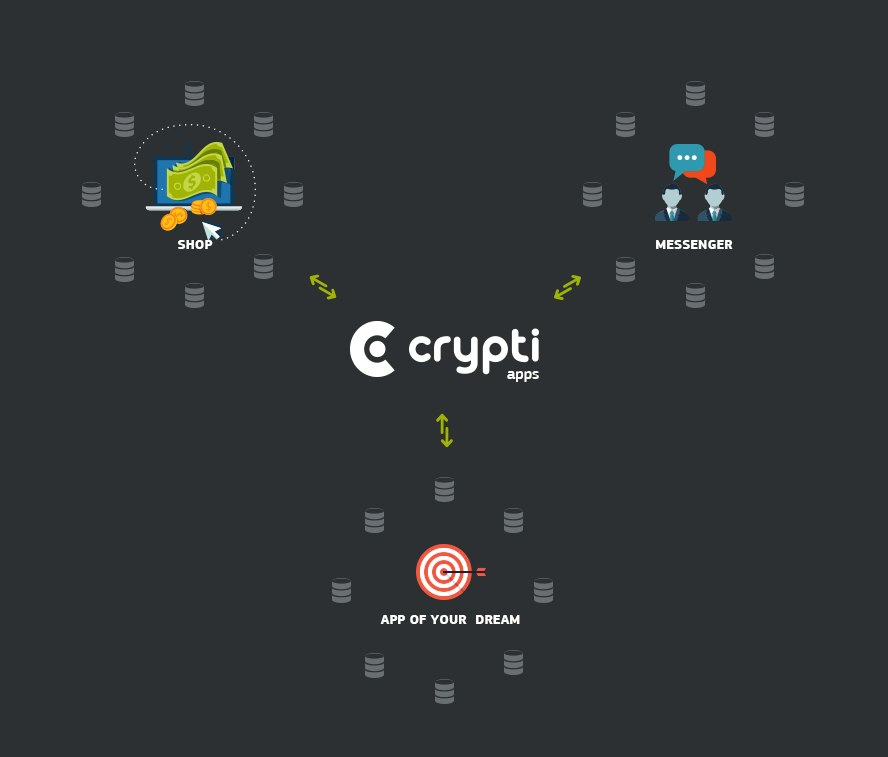

Crypti, a digital currency for e-commerce. OFFICIAL LAUNCH

All of the launch features which we committed to are now complete, functional, and available for use by the community. The launch features are as follows:
- Hybrid PoS:
- Proof of Time (PoT)
- Proof of Purchase (PoP)
- Merchant proof of Identity (PoI)
- High TPS (Transactions per Second) P2P communication
- Forging & Transaction Fee Compensation
- Web wallet
- RESTful API
- Merchant accounts
- Blockchain size optimization
- Fork recovery
- Docker cross-platform image
Crypti is a new crypto-currency designed from the ground up to solve the biggest problem with other currencies – lack of purchase motivation. Crypti is being built from scratch. It will not rely on any other crypto-currency code.
Crypti uses a combination of proof-of-stake algorithms making it first of a kind.
Crypti is being developed in lightweight Node.JS, and can run on every device out there, including embedded nodes.
Guaranteed Features
Custom block-chains, allowing anyone to launch their own chain with custom rules: calculations, storage
Combination of 3 PoS algorithms:
Proof-of-Purchase (purchases done since the last won forged block)
Proof-of-Time (node running up-time)
Proof-of-Identity (merchant address real-life validation)
Ed25519 DSA for increased security.
1 minute block time, pending on the network activity and node uptimes.
PoS retargeting on every new block.
Password protected wallets that allow recovery from seeds.
RESTful API for easy and fast interaction with Crypti nodes.
Appstore inside wallet
Team
The team consists from experienced developers, designers and investors well versed in the crypto world.
Team members are:
Boris Povod (creator, nodejs developer).
A.M. investor.
syrenity (developer)
Mike Doty (engineer)
GreXX (creative design)
Crypti Foundation
In order to ensure the ongoing Crypti development, marketing and promotion, a Crypti Foundation will be established. The Foundation will consist from members of the launch team, and from the publicly elected community members.
The foundation will control the raised funds in a public BTC wallet for transparency, and issue spending reports on a monthly fashion. The foundation will also control the vested Crypti of the launch team, and distribute them over the vested schedule.
The BTC funds will be kept in multi-singature enabled wallet, with multiple private keys distributed among the foundation members, for an increased safety of the funds.
The foundation will be eligible to replace it’s members and Crypti employees, based on their performance and public voting.
A detailed Foundation charter will be published for the community review during the pre-sale period.

Cryptomen got an exclusive announcement from the Crypti dev team:
“Following mainnet integration testing completion with Bter, the Crypti Fondation hereby announces the official Crypti mainnet launch today, August 21st, at 20:00 UTC.
An official post in the blog and forum with links to wallets will be published. We will also publish it here on Cryptomen Article
We would also like to say thank you. Thank you to the community members who stood by us through the many obstacles we faced in getting to where we are today. We know it wasn’t an easy road, but we made it. We wouldn’t be where we are without you.
Thank You.
The Crypti Team,
Boris, SyRenity, A.M., Bitseed, & GreXX”
You can find more about Crypti from their blog: http://blog.crypti.me/
For the technical details, check out the whitepaper: https://github.com/crypti/whitepaper
Crypti, with all it’s original and innovative features, is definitely a big step towards the future of crypto currencies!
Stay #turnt4cryptoz!
J.F is the trading desk coordinator and project manager at Cryptomen. B.B.A at the University of Québec in Montreal. Interested in technology, web, stocks and forex. Currently trading cryptos for a living.

 Every week, CEO J.F.Hotte will report on the state of Cryptomen. Here’s the Inaugural report:
Every week, CEO J.F.Hotte will report on the state of Cryptomen. Here’s the Inaugural report:{kind=link}